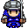
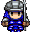

Vindinium
What is Vindinium???
Vindinium is a bot-fighting project that lets you customize your own bot with JavaScript.
Here is a sample of my Vindinium code:
As you can see from my comment, the code written tells the bot to decide what to do. I will explain each line of code. My explanation is after the "//."
var task; //This code opens up a new task; e.g. Do this, bot!
if bot.yourBot.life <= 40 && bot.yourBot.gold > 2) { //This code says that if my bots life is equal to or smaller than 40 HP...
task = "tavern"; //The name of the task is called "Tavern."
} else if(bot.yourBot.life > 40) { //Otherwise, if my bots health is above 40HP...
task = "freemines"; //The name of the task is called "Freemines."
} else if(bot.yourBot.life >=50) {Otherwise, if my bots health equals or is above 50HP...
task = "claimedmines";//The name of the task is called "Claimedmines."
}
The lines above have only been for opening new tasks for my bot. There is much more complicated code to explain!
If you would like to learn HTML (Webpage styling), CSS (More webpage styling), and JavaScript(Bot coding and other computer decisions), go to:Codecademy.com